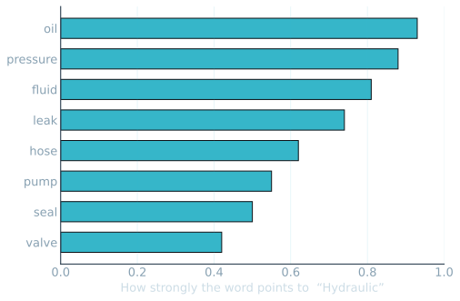

Text I · It learns a pattern from the past
400 maintenance notes nobody ever read.
Can a machine flag the 3 urgent ones in seconds — and where will it get it wrong?
◷ Clue now · the real answer at 4pm
Predictive AI · Session 01 of 04
01
Text Iwords become numbers.
Past notes
a pattern
predict the next
◷ Open loop running — where does this AI break?
Before we build · be honest
Where do you sit on AI — right now?
Card A
It can do anything
Point it at the problem and it just works.
Card B
Show me
On the fence. Could go either way.
Card C
Mostly hype
Sounds like nonsense for real engineering.
Cards up A / B / C — I count the roomWe take this poll again at 4pm
90 seconds · no model yet, just you
You're the classifier. Urgent or routine?
| # | Maintenance note (verbatim style) | Your call |
|---|
| 1 | "Routine 50-hr check complete, no findings, signed off." | U / R ? |
| 2 | "Hairline crack noted near turbine mount — grounding aircraft." | U / R ? |
| 3 | "Minor oil seep at fitting, within limits, monitor next cycle." | U / R ? |
| 4 | "Smoke smell in cockpit on taxi, intermittent, cause not yet found." | U / R ? |
| 5 | "Cabin light flickering, replaced bulb, ops normal." | U / R ? |
| 6 | "Pressure reading drifting low across last 3 cycles, still within limits." | U / R ? |
Sort each U or R · hands up where you split on 4 and 6
Two words · the whole vocabulary today
What you looked at is a feature. What you decided is a label.
Feature
The words you read
crack · smoke · grounding · routine · within limits — the inputs the machine measures.
Label
The call you made
Urgent or Routine — the answer we want it to predict on a note it has never seen.
Past notes + labels
Pattern
Predict a new note
The fair test · learn on some, grade on the rest
Learn on 260 — then grade it on 140 it never saw.
→
Find
a pattern in the words
→
It is scored only on the 140 notes it never read while learning. Anything else would be cheating.
Room locks a guess on cards · then I reveal
Out of 140 hidden notes — how many right?
Watch the screen · I type, you predict
The machine can't read English — it counts words.
Cards: which word appears most? · then I type live
Run the cell · your Colab tab
It learned the clue words — the same ones you used.
No one told it "crack" means urgent. It found that pattern itself, from past labelled notes.
Run the CLUE WORDS cell · Shift+Enter

Word weights learned from 260 past notes · offline copy of your Colab output
Turn to your neighbour · 60 seconds
Name one HAL report this could triage first.
Quality escapes · tooling requests · vendor non-conformances · shop-floor logs — where would catching the urgent one early pay off?
Think · Pair · Share — two or three out loud
The money shot · 140 notes, honestly
It agrees with us 90% of the time — and the misses are where it matters.
Same 140 hidden notes you just predicted on. 21 were truly urgent. It caught 20 — and called 1 routine.
Breathe · before the dial
Sit with the one missed crack.
One truly-urgent note, called routine. Could we just make the model more cautious? We can — but it costs us. Here's the dial.
I drag the dial · you call which way it breaks
One dial decides it: catch more urgent notes, or cry wolf less.
Cards first: push the line LEFT — recall up or down? · then I drag both ends
Why one big number can lie
"Always routine" scores 85% too — and catches zero urgent notes.
- Most notes really are routine — so doing nothing scores 85%, almost as high as our 90%.
- On accuracy alone, our model looks like a +5 point shrug. So what?
- But on catching urgent notes: ~95% vs 0%. THAT — not the 5 points — is the whole value.
Accuracy
Near-identical — the trap.
Urgent recall — did we catch them?
The real value lives here.
You're skeptics — so here's where it fails
Three ways this model breaks.
A word it never saw in training — a new part, a new fault — it has no weight for, so it shrugs.
- Sarcasm & shorthand — "great, another bearing gone" looks cheerful to a thing that just counts words.
- The calm-sounding emergency — worded routinely but genuinely urgent. That's the cell that missed one crack.
- These aren't bugs — they're the shape of the method. Knowing them is your job, not the machine's.
You tell me · cards or out loud
Three questions before you go.
The words the model reads — feature or label? → feature (the input)
- The urgent-vs-routine call it predicts — which is it? → label (the answer)
- Why isn't 85% "accuracy" good enough here? → it can still catch zero of the urgent ones
Room answers first · then I reveal
The one line that carries all day
It learns a pattern from the past.
260 past notes
the clue-word pattern
predict a new note
Text I → Text II · the rail moves one dot
What happens when it meets reports it has never seen?
Today it knew the words. Next session: notes full of words it was never taught — and the patterns no human labelled.
◷ The 4pm question is still open — where does this AI break?